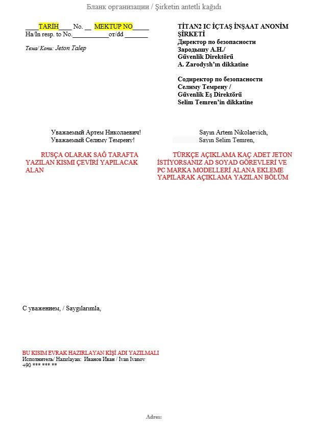

Akkuyu Nükleer Güç Sahasına Malzeme Girişi ve Jeton Kartı Başvuru Talimatları
1. Jeton Kartı Başvurusu
Akkuyu Nükleer Güç Sahasına düzenli giriş-çıkış yapacak veya yapılması planlanan malzemeler için JETON kartı verilmektedir.
Bu kartlar, talep edilen yılın sonuna kadar geçerli olup, yıl başında yenilenmesi için tekrar talepte bulunulmalıdır.
Not: Sarf malzemeleri (örneğin, vida, sprey boya vb.) için Jeton Kartı basılmamaktadır.
2. Malzeme Girişi için Gereklilikler
• Elektrik-Sıhhi Tesisat, Jeodezi Ekipmanları, Kamp Malzemeleri, Kontrol ve Ölçüm Ekipmanları, Yemekhane Malzemeleri için, malzemelerin
nerede ve ne amaçla kullanılacağı belirtilmeli ve malzemelerin fotoğrafları eklenerek aşağıdaki kişilere mail atılmalıdır:
• Sevinç Kara sevinc.kara@t2ic.com
• Rıfat Sefa Küçük rifat.kucuk@t2ic.com
• Kamera ve Drone Malzemeleri için, ilgili kişilere mail atılması gerekmektedir:
• Berkay Oflaz berkay.oflaz@t2ic.com
• Boris Popov'a boris.popov@t2ic.com
• Elektronik Malzemeler için Jeton talebinde bulunulacaksa, aşağıdaki firmalar ve kişilerden onay alınmalıdır:
• Firmalar: EGN, AKKUYU TRST, AKKUYU TST, İÇTAŞ NÜKLEER, İÇTUR SERVİS, İÇTAŞ ENDÜSTRİEL, TİTAN-2, T2-IC JV, TSM ENERJI, ELENİA TRUZİM
• E-posta Adresleri: office@t2ic.com , Andrei Shevchenko andrei.shevchenko@t2ic.com
Andrei Shevchenko Bey'in onayı sonrasında, açıklama kısmına malzeme hakkında detaylı bilgi (fotoğraf, sahaya giriş-çıkış sebebi vb.) eklenmeli ve mailin konu kısmına
"FİRMA JETON TALEBİ HK" yazılmalıdır. Örnek: NAZIM İNŞAAT JETON TALEBİ HK. Mailin, Sevinç Kara sevinc.kara@t2ic.com
ve Rıfat Sefa Küçük rifat.kucuk@t2ic.com adreslerine gönderilmesi gerekmektedir.
3. Yeni Pasaport ile Jeton Kartı Başvurusu
JJeton kartı başvurusu yapılan personelin pasaportu değişmişse, başvurunun işleme alınabilmesi için aşağıdaki işlemlerin yapılması gerekmektedir:
Başvuru için gerekli evraklar:
• Personelin fotoğrafı.
• Eski ve yeni pasaportların ilk sayfalarının taranmış kopyaları.
• SGK 4A işe giriş çıkış bildirgesi (İnsan Kaynakları tarafından veya e-Devlet üzerinden alınabilir).
• Mavi kimlik arkalı önlü taraması (ya da başvuru formu ve ekran görüntüsü; görevlendirme ile geliyorsa, görevlendirme belgesi ve çalışma defteri).
Yukarıdaki belgeler tugbahan.karakaya@t2ic.com , muslum.elibol@t2ic.com ve ezgi.kaygisiz@t2ic.com adreslerine iletilmelidir.
Mailin konu kısmına "NEW PASSPORT/YENİ PASAPORT" yazılmalıdır. Ayrıca, eski giriş kartının teslim edilmesi gerekmektedir.
Adres: Akkuyu ABK Binaları yanındaki Modül 3, 2 katlı Güvenlik Departmanı binası.
4. Bilgi Eksiklikleri ve Dikkat Edilmesi Gerekenler
• Marka, Model, Seri No ve Renk bölümlerinin tam ve doğru şekilde doldurulması zorunludur. Bu bilgilerin eksik bırakılmaması gerekmektedir.
• Sadece belirtilen firmalar yukarıdaki başvuru prosedürlerine uygun olarak işlem yapmalıdır.
Jeton kartı başvuruları, yukarıda belirtilen adımlar dikkate alınarak ve gerekli tüm belgeler ile tamamlanmalıdır.
ÖNEMLİ: Sadece belirtilen firmalar aşağıda verilen mektubu içeriğinde yazan notlara dikkat ederek doldurulmalıdır.
ÖNEMLİ: Marka, Model, Seri No ve Renk bölümlerinde bilgi verilmesi zorunludur. Lütfen bu bilgileri boş bırakmayınız.

Ek olarak, aşağıda belirtilen Excel dosyası aşağıdaki kurallara dikkat edilerek doldurulmalıdır:
• Personele yazılacak jeton talebi, TC kimlik numarası ile kart bilgilerine göre yapılmalıdır.
• Yabancı personeller için "Zagran" pasaport numarasının yazılması zorunludur.
• Çalışma kimlik numarası ile yapılan başvurular dikkate alınmayacaktır (99 ile başlayan çalışma kimlik numaraları).
• Akkuyu giriş kartı olmayan personellerin jeton kartı başvuruları işleme alınmayacaktır.
• Akkuyu giriş kartı firması ile jeton kartı firması aynı olmalıdır. Aksi durumda, giriş kartı firma değişikliği olarak yeniden düzenlenmelidir.

Gerekli Evraklar:
• Jeton Başvuru Excel Dosyası
• Mektup (Rusça-Türkçe) – Belirtilen Firmalar için
• Personelin Akkuyu Giriş Kartı Fotoğrafı
NOT: Eksik bilgi içeren talepler işleme alınmayacaktır.